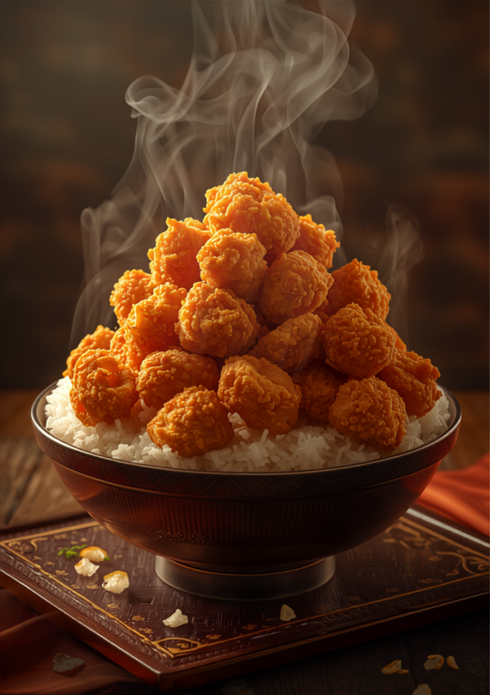
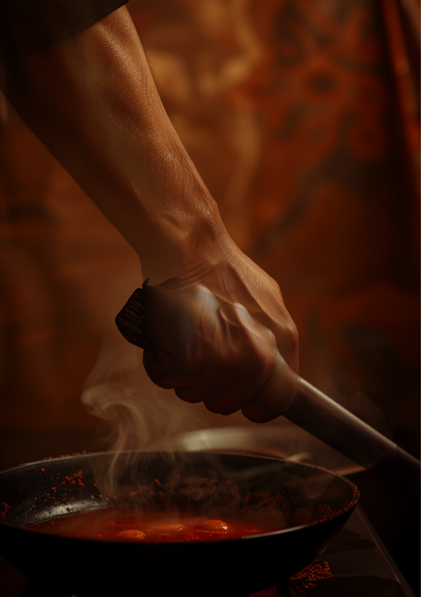

福大前の大人気定食屋。高校生から働くおじ様まで、四十年、腹いっぱいにしてきた魂の一杯。

SIZE COMPARISON
ご飯は普通盛りでも、おなかいっぱい。大盛りは、大食いに自信がある人だけ。
O-SHINAGAKI
握り拳大の唐揚げがドンとのる、一番人気。
甘くて美味い唐揚げに、ご飯とお味噌汁。王道の満腹。
なぜか皆さん注文率高め。彩りにもう一品。
しっかり茶色。茶色が美味いのは、わかってます。
THE HANDSHAKE
食券を持って注文しに行くと、店の亭主さんが握手してくれます。そして帰りも、食べた食器を持って行くと、また握手。

VOICES
福岡市内でかなり有名。唐揚げは1個が握り拳くらいの大きさで、ご飯は普通盛りでもおなかいっぱいになります。
食券を持って注文しに行くと亭主さんが握手してくれます。帰りも食器を持って行くとまた握手！雰囲気が良すぎて、また行きたくなるお店です。
通るたびに行列。高校生から大学生、就活中のお姉さん、働くおじ様まで年齢層も幅広い。タッパー30円で持ち帰りもできて、心行くまで堪能できます。